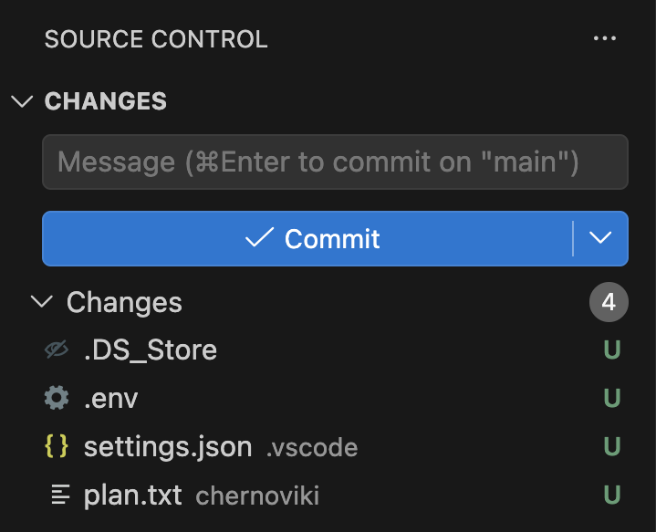
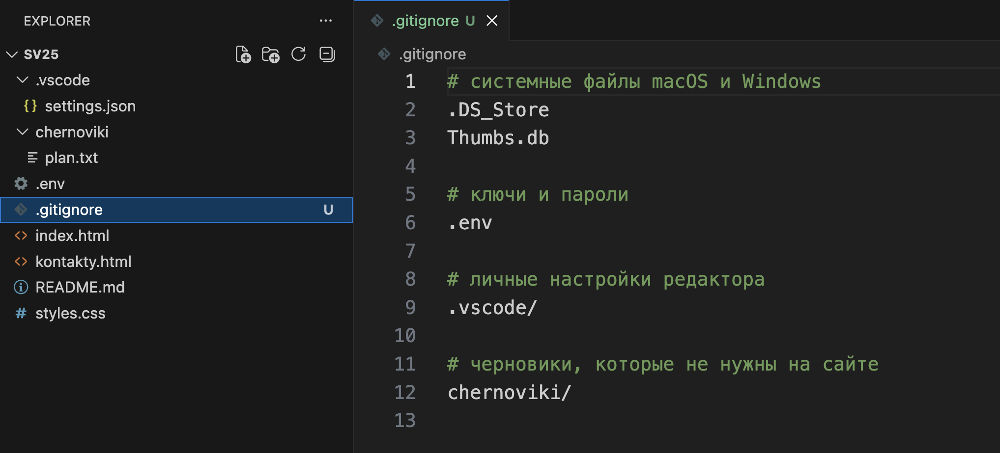
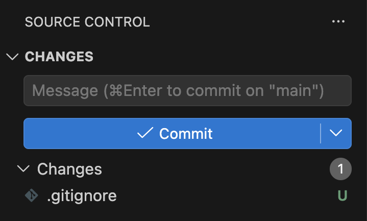
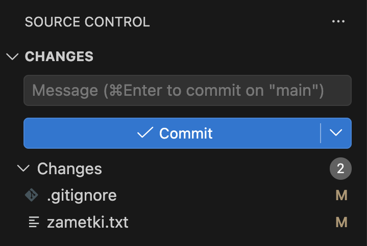
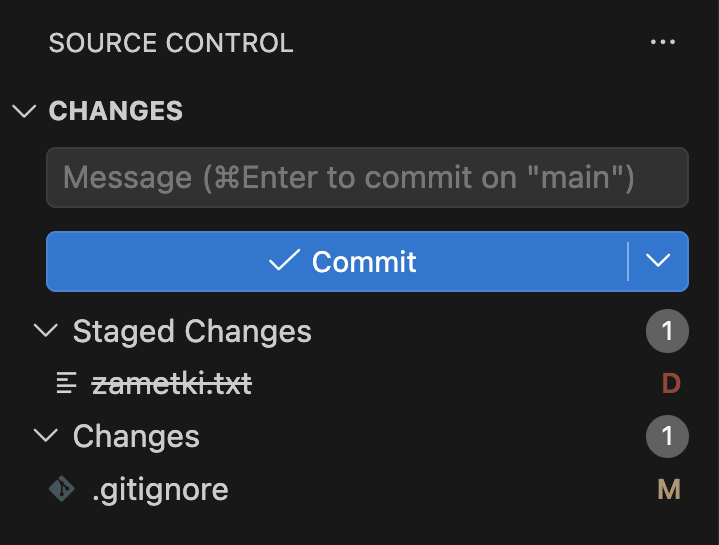
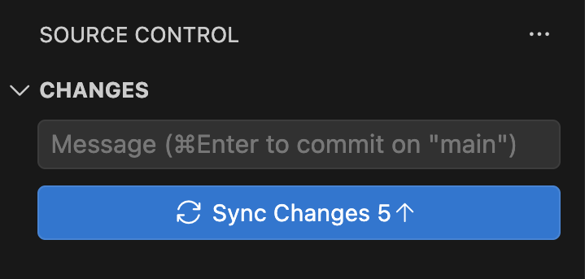
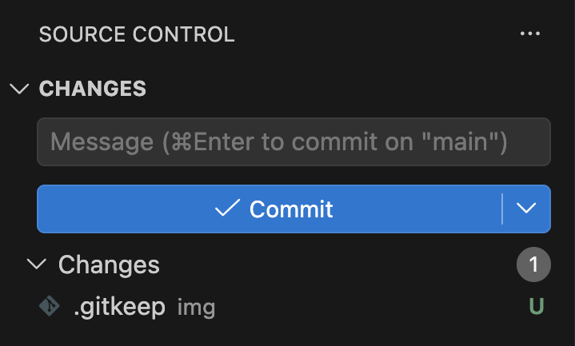
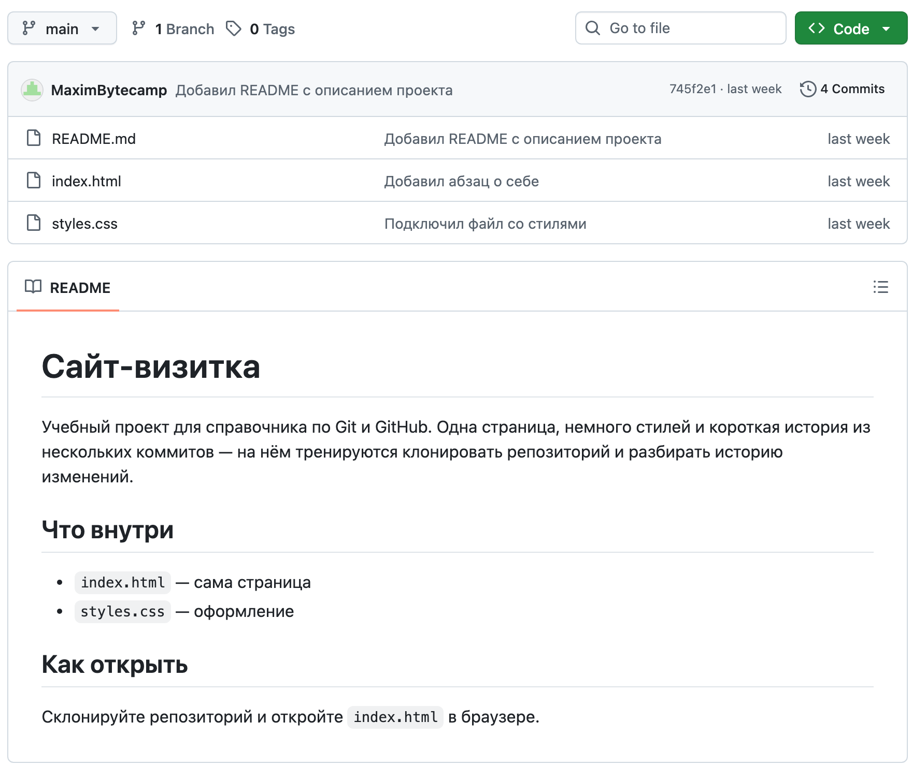
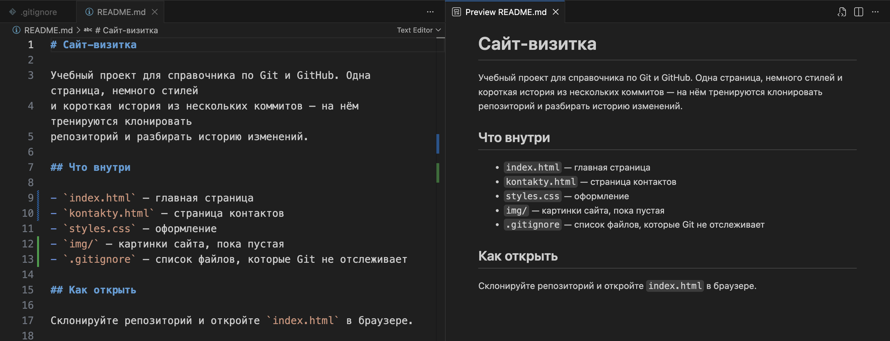

Справочник по Git и GitHub · модуль 2 · первый репозиторий в VS Code
Глава 2.5
Служебные файлы:
.gitignore, .gitkeep, README
В папке проекта кроме страниц сайта появляются системные файлы, ключи доступа, настройки редактора и черновики. В главе разобрано, как файл .gitignore убирает их из списка изменений, что делать с файлом, который уже попал в историю, как сохранить в репозитории пустую папку и как написать README — описание проекта, которое GitHub показывает на его главной странице.
- Категория
- Основы работы
- Уровень
- Начальный
- Что получится
- Репозиторий без лишних файлов и с описанием на GitHub
- Сколько занимает
- Около двадцати пяти минут за компьютером
§1Какие файлы не нужны в истории
Git показывает в панели каждый новый файл в папке проекта. Часть из них создаёте не вы: операционная система кладёт в папки свои служебные файлы, редактор сохраняет настройки, программы пишут журналы. Часть создаёте вы, но для себя: черновики, заметки, файл с паролем от сервиса. Всё это лежит рядом с сайтом, но в историю проекта попадать не должно.
Зачем это нужно в работе
- Пароли и ключи не уходят на GitHub. Ключ из открытого репозитория находят автоматические сканеры. Если в истории оказался ключ платёжного или почтового сервиса, им может воспользоваться кто угодно.
- Список изменений показывает только работу. Когда в панели двадцать системных файлов, среди них легко пропустить нужный или случайно отобрать лишний плюсом у заголовка.
- У каждого свои настройки. Размер шрифта и тема редактора у участников разные. Если хранить их в общем репозитории, каждый коммит будет переписывать настройки соседа.
- Новому участнику проект понятен с первой страницы. README объясняет, что это за проект, из чего он состоит и как его запустить. Без него приходится открывать файлы по одному.
Для этого в репозитории есть служебные файлы. На работу сайта они не влияют, в них записаны правила и сведения о самом репозитории. В этой главе их три:
| Файл | Для кого | Что делает |
|---|---|---|
.gitignore | Для Git | Перечисляет файлы и папки, которые Git не показывает в списке изменений и не предлагает закоммитить |
.gitkeep | Для Git | Пустой файл внутри папки: благодаря ему пустая папка попадает в репозиторий |
README.md | Для людей | Описание проекта; GitHub показывает его под списком файлов на главной странице репозитория |
Имена первых двух начинаются с точки. В macOS и Linux так обозначают скрытые файлы: файловый менеджер их по умолчанию не показывает. Проводник VS Code показывает большинство таких файлов, кроме нескольких системных — например, .DS_Store.
§2Подготовка: четыре лишних файла
Сначала создаём лишние файлы, чтобы увидеть, как Git их показывает.
В главе используется проект sait-vizitka из прошлых глав. Создаём в нём четыре файла, какие появляются почти в каждом проекте. Файлы создаются в проводнике VS Code значком New File, папки — значком New Folder.
Файл .env в корне проекта. Так обычно называют файл с ключами и паролями: программа читает их оттуда при запуске. Здесь это ключ почтового сервиса, который будет отправлять письма с формы на странице контактов. Ключ выдуман для примера.
FORM_KEY=pk_live_4f9a2c71e0b3
Папка .vscode с файлом settings.json. VS Code создаёт её сам, когда вы меняете настройку только для этой папки проекта, например размер шрифта. Здесь создаём вручную:
{
"editor.fontSize": 16
}
Папка chernoviki с файлом plan.txt. В нём список того, что вы хотите добавить на сайт:
Что добавить на сайт: - страницу с проектами - фотографию
Системный файл. На macOS его создавать не нужно: .DS_Store появляется сам, как только папку откроют в Finder. На Windows похожую роль играет Thumbs.db — в нём проводник хранит уменьшенные копии картинок.
Что получилось.В папке проекта четыре лишних файла: ключ, настройки редактора, черновик и системный файл.
§3Шаг 1. Посмотреть, что видит Git
Файлы созданы. Проверим, как их видит Git и попадут ли они в коммит, если ничего не менять.
Открываем панель Source Control. Все четыре файла стоят в разделе Changes:

В терминале то же самое выглядит так:
git status --short
?? .DS_Store
?? .env
?? .vscode/
?? chernoviki/
Два вопросительных знака обозначают неотслеживаемый файл — ту же букву U из панели. Если в папке все файлы новые, Git пишет только имя папки: .vscode/ вместо .vscode/settings.json.
Если сейчас нажать плюс у заголовка Changes, все четыре файла уйдут в коммит, а ключ из .env — в историю проекта.
Что получилось.Git считает все четыре файла новыми и готов отправить их в историю вместе со следующим коммитом.
§4Шаг 2. Создать файл .gitignore
Файлы, которые Git должен пропускать, перечисляют в отдельном файле проекта.
.gitignore — текстовый файл в корне проекта. В каждой его строке записано имя или шаблон имени. Файлы, которые под них подходят, Git не показывает в списке изменений и не добавляет в коммит, даже если отобрать всё разом.
- Переходим в проводник (CtrlCmd + Shift + E) и нажимаем значок New File в строке с именем проекта.
- Вводим имя
.gitignore— с точкой в начале, без расширения — и нажимаем Enter. - В открывшийся файл записываем правила, приведённые ниже, и сохраняем его.
# системные файлы macOS и Windows .DS_Store Thumbs.db # ключи и пароли .env # личные настройки редактора .vscode/ # черновики, которые не нужны на сайте chernoviki/
Строки, которые начинаются с #, — комментарии: Git их пропускает. В них записывают, зачем добавлено правило. Пустые строки тоже пропускаются. Косая черта в конце .vscode/ и chernoviki/ означает, что правило относится к папке со всем её содержимым.

.vscode, chernoviki, .env. С диска они не пропали. Файла .DS_Store в проводнике нет: VS Code скрывает его по своим настройкам.Возвращаемся в панель Source Control. Если список не изменился, нажмите круговую стрелку Refresh в строке CHANGES.

.gitignore: его Git показывает, потому что правила в нём относятся к другим файлам.Что получилось.В корне проекта лежит .gitignore. Четыре лишних файла из панели пропали, в списке изменений остался только сам .gitignore.
§5Справка: как читать строки .gitignore
Прежде чем двигаться дальше, разберём, как Git читает строки этого файла: от них зависит, какие файлы он пропустит.
Строка может быть точным именем или шаблоном. Звёздочка заменяет любую часть имени, косая черта указывает, где искать.
| Строка | Что скрывает | Что не скрывает |
|---|---|---|
.env | Файл .env в корне и в любой вложенной папке | Файл .env.example: имя другое |
*.log | Все файлы с расширением .log в любой папке проекта | Файл log.txt: расширение другое |
tmp/ | Папку tmp с содержимым, где бы она ни лежала: и tmp/x, и sub/tmp/y | Файл с именем tmp: косая черта в конце означает только папку |
/todo.txt | Файл todo.txt только в корне проекта | Файл sub/todo.txt: косая черта в начале привязывает правило к корню |
logs/*.log | Файлы .log прямо в папке logs | Файлы .log в других папках |
!keep.log | Ничего: восклицательный знак делает исключение из правил выше. Вместе с *.log файл keep.log останется в списке | Файл внутри папки, которая скрыта целиком. Строки logs/ и !logs/b.log вместе файл b.log не вернут |
# текст | Ничего, это комментарий | — |
Порядок строк имеет значение: исключение с ! пишут ниже правила, из которого оно делает исключение.
§6Шаг 3. Проверить, какое правило сработало
Правила записаны. Проверим, какие файлы под них попали.
Когда правил становится много, бывает непонятно, почему файл не виден в панели. Это показывает команда git check-ignore с ключом -v:
git check-ignore -v .env chernoviki/plan.txt
.gitignore:6:.env .env
.gitignore:12:chernoviki/ chernoviki/plan.txt
Каждая строка ответа состоит из четырёх частей: файл с правилами, номер строки в нём, само правило и имя проверенного файла. По первой строке видно, что .env скрыт шестой строкой .gitignore. Если файл ни под одно правило не подходит, команда ничего не печатает.
Полный список скрытых файлов выводит git status с ключом --ignored:
git status --short --ignored
?? .gitignore
!! .DS_Store
!! .env
!! .vscode/
!! chernoviki/
Два восклицательных знака отмечают скрытые файлы. Этот список стоит просмотреть после каждой правки .gitignore: если в нём оказался нужный файл, правило написано слишком широко.
Что получилось.Видно, какая строка .gitignore скрывает каждый файл, и полный список скрытого.
§7Шаг 4. Закоммитить .gitignore
Правила работают, но пока только на вашем компьютере: сам .gitignore ещё не в истории.
Сам .gitignore в историю попадать должен. Правила в нём нужны всем, кто работает с проектом: после клонирования они сработают и на другом компьютере, и лишние файлы не будут видны в панели у коллег.
Наводим курсор на .gitignore в панели, нажимаем +, пишем сообщение «Добавил .gitignore» и нажимаем ✓ Commit. То же в терминале:
git add .gitignore git commit -m "Добавил .gitignore"
Ассоциация: фильтр в почте
В почтовом ящике настроен фильтр: письма от рассылок сразу уходят в отдельную папку. Они приходят, их можно открыть, но во «Входящих» они не появляются и не отвлекают от рабочих писем.
.gitignore работает так же со списком изменений. Файлы остаются на диске и открываются как обычно, но в панели Source Control не появляются и в коммит не попадают.
Где не совпадаетПочтовый фильтр можно применить к старым письмам, и он разложит их заново. .gitignore действует только на файлы, за которыми Git ещё не следит. Файл, уже попавший в коммит, правило не скроет — это следующий шаг.
Что получилось..gitignore в истории проекта. Его правила получит каждый, кто склонирует проект.
§8Шаг 5. Файл, который уже в истории
.gitignore часто появляется в проекте позже, чем нужно: несколько коммитов уже сделано, и лишний файл в них вошёл. Воспроизведём такой случай на отдельном файле, чтобы увидеть, как его исправить.
Создаём в корне проекта файл zametki.txt:
Спросить у куратора про домен
Отбираем его плюсом и делаем коммит «Добавил заметки». Теперь файл в истории. То же в терминале:
git add zametki.txt git commit -m "Добавил заметки"
Решаем, что заметки в репозитории не нужны, и дописываем правило в конец .gitignore:
# личные заметки zametki.txt
Добавляем в zametki.txt вторую строку и сохраняем оба файла:
Спросить у куратора про домен
Спросить у куратора про домен Купить хостинг до пятницы

zametki.txt записано, но файл по-прежнему в списке с буквой M — изменён. Git продолжает за ним следить.Команда проверки тоже ничего не находит: git check-ignore -v zametki.txt не печатает ни строки. Правила .gitignore применяются только к неотслеживаемым файлам. Файл, который уже есть в последнем коммите, Git отслеживает независимо от них.
Чтобы Git перестал следить за файлом, его убирают из индекса, а на диске оставляют. В панели для этого кнопки нет, нужен терминал: Ctrl + ` открывает его внизу окна на всех трёх системах.
git rm --cached zametki.txt
rm 'zametki.txt'
От ключа --cached зависит, что будет удалено. Без него git rm удалит файл и из индекса, и с диска. С ним файл удаляется только из индекса — из того, что войдёт в следующий коммит.

zametki.txt с буквой D — удалён. Имя зачёркнуто, хотя на диске файл остался. В Changes лежит изменённый .gitignore.Отбираем плюсом и .gitignore, пишем сообщение «Убрал zametki.txt из репозитория» и делаем коммит. То же в терминале:
git add .gitignore git commit -m "Убрал zametki.txt из репозитория"
После коммита файл остаётся в папке, а в списке скрытых появляется пятая строка:
git status --short --ignored
!! .DS_Store
!! .env
!! .vscode/
!! chernoviki/
!! zametki.txt
Из прошлых коммитов файл не исчез. Старую версию можно достать по имени коммита «Добавил заметки». У вас оно своё, его видно в разделе Graph:
git show 23f5fe6:zametki.txt
Спросить у куратора про домен
Команда git rm --cached убирает файл только из следующих коммитов. В старых он остаётся и после отправки на GitHub доступен всем, кто видит репозиторий. Поэтому ключ, который хоть раз попал в коммит, считают раскрытым: в личном кабинете сервиса выпускают новый, а старый отключают. Вычищать файл из всей истории можно, но это отдельная операция с переписыванием коммитов, и выпуск нового ключа она не заменяет.
Что получилось.zametki.txt остался на диске, Git за ним больше не следит. Старая версия файла осталась в коммите «Добавил заметки».
§9Шаг 6. Пустая папка и .gitkeep
Лишние файлы из списка изменений убраны. Следующий служебный файл нужен, чтобы сохранить в репозитории пустую папку.
Для картинок сайта заведём папку img. Картинок пока нет, но папка нужна сразу: в ней договорились хранить все изображения проекта.
Создаём папку значком New Folder в проводнике и открываем панель Source Control.

git status тоже ничего не печатает. Git хранит файлы и пути к ним, а папку как отдельную запись не хранит. Папка попадает в репозиторий, только когда в ней есть хотя бы один файл, а пустую Git не замечает.
Поэтому в пустую папку кладут пустой файл. Его принято называть .gitkeep. Создаём в папке img файл с этим именем и ничего в него не пишем:

.gitkeep из папки img. Вместе с ним в коммит попадёт и сама папка.Имя .gitkeep придумали разработчики, в самом Git оно ничего не значит. Git сохраняет папку потому, что в ней есть файл, а имя этого файла роли не играет. Имя прижилось, потому что по нему сразу понятно, зачем файл нужен. Когда в img появятся картинки, .gitkeep можно удалить.
Отбираем файл плюсом и делаем коммит «Добавил папку для картинок». То же в терминале:
git add img/.gitkeep git commit -m "Добавил папку для картинок"
Что получилось.Папка img в репозитории, внутри один пустой файл .gitkeep.
§10Шаг 7. README — описание проекта
Последний служебный файл этой главы адресован людям.
README — текстовый файл в корне проекта с описанием для людей: что это за проект, из чего он состоит, как его запустить. Название значит «прочти меня». GitHub показывает этот файл на главной странице репозитория, поэтому его читают первым.
В sait-vizitka README уже есть: он пришёл вместе с клоном. Посмотрим, как он выглядит на GitHub:

README.md. Заголовки, списки и код GitHub оформляет по разметке, записанной в файле.Раздел «Что внутри» устарел: в нём два файла, а в проекте появились страница контактов, папка для картинок и .gitignore. Открываем README.md и меняем список:
## Что внутри - `index.html` — сама страница - `styles.css` — оформление
## Что внутри - `index.html` — главная страница - `kontakty.html` — страница контактов - `styles.css` — оформление - `img/` — картинки сайта, пока пустая - `.gitignore` — список файлов, которые Git не отслеживает
Расширение .md означает, что файл записан в разметке Markdown. Это обычный текст с несколькими условными знаками: решётка в начале строки делает заголовок, дефис — пункт списка, обратные кавычки выделяют имя файла или команду. Как текст будет выглядеть после оформления, VS Code показывает рядом с файлом: CtrlCmd + K, затем V.

12 и 13 отмечает добавленные строки, синяя у 9 и 10 — изменённые.| Что написать | Что получится | Где пригодится в README |
|---|---|---|
# Сайт-визитка | Заголовок первого уровня | Название проекта, одно на файл |
## Как открыть | Заголовок раздела | Разделы описания |
- пункт | Пункт списка | Состав проекта, требования |
`index.html` | Имя файла моноширинным шрифтом | Имена файлов, папок и команд в тексте |
**важно** | Полужирный текст | Предупреждение внутри абзаца |
[сайт](https://…) | Ссылка с текстом «сайт» | Адрес опубликованного сайта, документация |
Строка ``` до и после блока | Блок кода | Команды, которые нужно выполнить |
Сохраняем файл, отбираем его плюсом и делаем коммит «Обновил список файлов в README». То же в терминале:
git add README.md git commit -m "Обновил список файлов в README"
На GitHub новое описание появится после отправки коммитов в модуле 4.
Что обычно есть в README
Что получилось.README описывает весь проект, включая новые файлы. За главу в истории появилось пять коммитов: .gitignore, заметки, удаление заметок, папка для картинок и README.
§11Готовые шаблоны .gitignore
В этой главе .gitignore писали вручную. Для настоящих проектов есть готовые списки.
Писать .gitignore с нуля для каждого проекта не нужно. Для распространённых языков и инструментов списки уже составлены.
| Где взять | Как пользоваться |
|---|---|
| Форма создания репозитория на GitHub | В списке Add .gitignore выбрать язык, например Python или Node. Файл появится в первом коммите нового репозитория |
| Репозиторий github/gitignore | Открыть файл нужного языка, скопировать содержимое в свой .gitignore. Из этого репозитория берёт шаблоны и форма создания |
| Общий файл на вашем компьютере | Правила из файла ~/.config/git/ignore действуют во всех репозиториях на этом компьютере. Туда пишут то, что создаёт ваша система: .DS_Store на macOS, Thumbs.db на Windows |
Общий файл действует только у вас: коллеги его не получат. Поэтому правила, от которых зависит безопасность проекта, — .env, папки со сборкой, журналы — пишут в .gitignore проекта, даже если у себя вы их уже скрыли. В общий файл попадает только то, что создаёт ваша система и ваш редактор.
§12Частые вопросы
.gitignore, Git его удалит..gitignore, и Git перестанет за ним следить.git rm --cached и закоммитить удаление..env из репозитория следующим коммитом, ключ больше никто не увидит..gitkeep — специальная команда Git..gitignore — личный файл, его не коммитят.~/.config/git/ignore.§13Проверьте себя
В .gitignore есть строка *.log. Какие из файлов server.log, logs/app.log, log.txt Git скроет?
Первые два. Шаблон *.log подходит к любому имени с окончанием .log в любой папке проекта. У log.txt расширение .txt, он останется в списке.
Вы дописали config.json в .gitignore, но файл всё равно стоит в панели с буквой M. Почему и что делать?
Файл уже был в коммите, и Git за ним следит. Правила .gitignore на отслеживаемые файлы не действуют. Нужно выполнить git rm --cached config.json и закоммитить удаление вместе с изменённым .gitignore. Файл останется на диске.
Чем git rm --cached файл отличается от git rm файл?
С ключом --cached файл убирается только из индекса и остаётся на диске. Без ключа файл удаляется и из индекса, и из папки проекта.
Как понять, какая строка .gitignore скрыла файл?
Выполнить git check-ignore -v имя-файла. Команда печатает файл с правилами, номер строки и само правило. Если ответа нет, файл не скрыт ни одним правилом.
Вы создали папку docs и хотите, чтобы она была в репозитории, но файлов в ней пока нет. Что сделать?
Положить в неё пустой файл, обычно его называют .gitkeep, и закоммитить его. Пустую папку Git не видит, потому что хранит только файлы и пути к ним.
В каком файле и какой строкой записать, что папка build не должна попадать в историю?
В .gitignore в корне проекта, строкой build/. Косая черта в конце означает, что правило относится к папке со всем содержимым.
§14Шпаргалка по главе
.gitignore — что не отслеживать
.gitkeep — сохранить пустую папку
README.md — описание проекта
.env — файл в любой папке
*.log — по расширению
tmp/ — папка целиком
/todo.txt — только в корне
!keep.log — исключение
git check-ignore -v файл
git status --short --ignored
git rm --cached файл
затем коммит
ключ из истории — заменить
# заголовок
- пункт списка
`имя файла`
CtrlCmd+K, затем V
Итог главы
Служебные файлы описывают сам репозиторий. .gitignore перечисляет файлы и папки, которые Git не показывает в списке изменений: системные файлы, ключи из .env, личные настройки редактора, черновики. Строки в нём — имена и шаблоны: звёздочка заменяет часть имени, косая черта в конце означает папку, в начале — корень проекта, восклицательный знак делает исключение. Какое правило скрыло файл, показывает git check-ignore -v. Сам .gitignore коммитят, чтобы правила работали у всех. На файлы, которые уже есть в коммитах, правила не действуют: такой файл убирают из индекса командой git rm --cached, а в прошлых коммитах он остаётся, поэтому попавший туда ключ заменяют новым. Пустую папку Git не хранит, в неё кладут пустой .gitkeep. README.md — описание проекта в разметке Markdown, GitHub показывает его на главной странице репозитория. В следующей главе разберём, как отменять изменения: вернуть файл к последнему коммиту, исправить последний коммит и откатить старый.
- Кадры и ответы команд получены на клоне проекта sait-vizitka в Git версии 2.51.1 и VS Code версии 1.138.
- Синтаксис шаблонов, порядок правил и общий файл
~/.config/git/ignore— документация gitignore. - Команды
git check-ignoreиgit rm --cached— документация git-check-ignore и git-rm. - Готовые шаблоны — репозиторий github/gitignore; README на странице репозитория — документация GitHub, About READMEs.
- Что делать с раскрытым ключом — документация GitHub, Removing sensitive data from a repository.